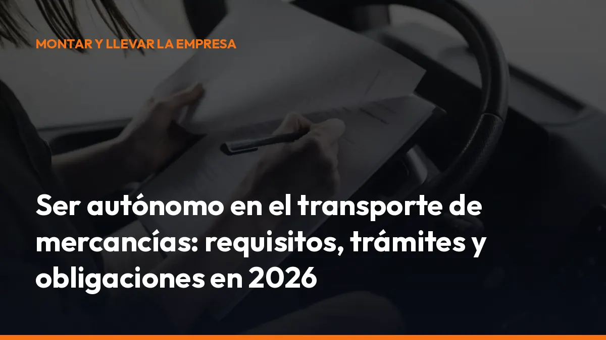

Ser autónomo en el transporte de mercancías: requisitos, trámites y obligaciones en 2026

En 2026 no basta con comprar una furgoneta o un camión y empezar a facturar. Debes cumplir obligaciones fiscales, laborales y administrativas. También necesitas controlar tu documentación antes de cada servicio.
La buena noticia es que puedes organizarlo de forma sencilla. Una gestión previa adecuada evita errores, retrasos y sanciones. De hecho, hasta el 40 % de las sanciones que afectan al transporte pueden evitarse revisando la documentación antes de salir a ruta.
En esta guía encontrarás los pasos para darte de alta, solicitar la tarjeta de transporte, cumplir con el CAP y trabajar como autónomo real, sin caer en una situación de falso autónomo.
¿Qué necesitas para ser autónomo transportista en 2026?
Para iniciar una actividad de transporte de mercancías por carretera necesitas preparar estos elementos:
- Alta fiscal: registra tu actividad en Hacienda con el epígrafe correspondiente, habitualmente el 722, relativo al transporte de mercancías por carretera.
- Alta en el RETA: inscríbete como trabajador autónomo en la Seguridad Social antes de comenzar la actividad.
- Vehículo adecuado: debe estar a tu nombre, en leasing, renting o bajo otra fórmula que te permita disponer legalmente de él.
- Tarjeta de transporte: solicita la autorización que corresponda al tipo de vehículo y al servicio que vas a prestar.
- CAP en vigor: si conduces profesionalmente vehículos para los que se exige, debes disponer del Certificado de Aptitud Profesional.
- Seguro obligatorio: mantén vigente el seguro del vehículo y valora un seguro de mercancías y responsabilidad civil del transportista.
- Honorabilidad: conserva un historial administrativo compatible con el mantenimiento de la autorización.
- Documentación de cada servicio: lleva la información necesaria para justificar el transporte ante un control.
Empieza por definir tu actividad, el tipo de vehículo y si trabajarás en transporte nacional o internacional. Esa decisión determina buena parte de tus trámites.
1. Date de alta en Hacienda y en la Seguridad Social
El primer paso para ser autónomo transportista es registrar correctamente la actividad.
Alta en Hacienda
Debes presentar el modelo censal que corresponda y seleccionar el epígrafe adecuado del Impuesto sobre Actividades Económicas. En el transporte de mercancías por carretera suele utilizarse el epígrafe 722, aunque conviene confirmar tu caso según los servicios que vayas a prestar.
También tendrás que elegir tus obligaciones fiscales:
- IVA: declaraciones periódicas y resumen anual, cuando corresponda.
- IRPF: pagos fraccionados o retenciones según tu forma de facturar.
- Facturación: emisión de facturas completas, numeradas y con los datos obligatorios.
- Gastos deducibles: combustible, mantenimiento, seguros, peajes, gestoría y otros gastos vinculados a la actividad.
Alta en el RETA
Después debes darte de alta en el Régimen Especial de Trabajadores Autónomos. Comunica correctamente tu actividad, tu previsión de rendimientos y la base de cotización elegida dentro del tramo que corresponda.
No empieces a trabajar antes de completar estas altas. Si facturas sin estar correctamente registrado, puedes enfrentarte a regularizaciones, recargos y problemas durante una inspección.
Consulta también la información oficial de la Seguridad Social para trabajadores autónomos.
2. Solicita la tarjeta de transporte que necesitas
La tarjeta de transporte es la autorización administrativa que permite realizar transporte público de mercancías por carretera por cuenta ajena. El tipo de autorización depende de factores como:
- La MMA del vehículo.
- Si realizas transporte nacional o internacional.
- La clase de mercancía.
- La titularidad o disponibilidad del vehículo.
- La estructura de tu actividad y sus requisitos administrativos.
De forma general, encontrarás referencias a autorizaciones MDL para vehículos ligeros y MDP para transporte pesado. Sin embargo, no debes elegirla solo por el nombre. Revisa tu caso concreto con la Administración competente.
Para tramitarla, normalmente tendrás que acreditar:
- Establecimiento en España.
- Vehículo adecuado en propiedad, leasing o arrendamiento.
- ITV vigente.
- Seguro obligatorio.
- Alta fiscal y en la Seguridad Social.
- Cumplimiento de las obligaciones tributarias y sociales.
- Honorabilidad.
- Competencia profesional y capacidad financiera, cuando sean exigibles.
Si realizas transporte internacional con vehículos de más de 2,5 toneladas y hasta 3,5 toneladas, revisa especialmente los requisitos adicionales de la normativa europea.
Consulta las condiciones actualizadas en la información oficial del Ministerio de Transportes sobre mercancías.
3. Obtén y conserva el CAP
El CAP es un requisito personal del conductor profesional. No sustituye a la tarjeta de transporte y tampoco acredita por sí solo que puedas operar como empresa transportista.
Si vas a conducir un camión profesionalmente, normalmente necesitarás:
- Permiso de conducir adecuado, como C o C+E.
- CAP inicial, para comenzar según la modalidad correspondiente.
- Formación continua, para mantener la cualificación.
- CAP en vigor, acreditado en tu documentación o permiso cuando proceda.
Controla la fecha de caducidad. Trabajar con el CAP vencido puede provocar una sanción y dejarte sin posibilidad de prestar el servicio legalmente.
Además del CAP, revisa antes de cada ruta:
- Permiso de conducir.
- Tarjeta de transporte.
- Seguro obligatorio.
- ITV.
- Documento de control o carta de porte.
- Documentación de la mercancía.
- Autorizaciones específicas, si transportas mercancías peligrosas o especiales.
Guarda todo en formato físico o digital. Tener la documentación disponible al instante reduce el tiempo perdido en controles y evita depender de archivos dispersos en el móvil.
4. Mantén la honorabilidad para conservar tu autorización
La honorabilidad es uno de los requisitos necesarios para acceder y mantener determinadas autorizaciones de transporte.
No se trata de un documento que puedas guardar en la guantera. Es una condición vinculada a tu comportamiento legal y administrativo. Las infracciones graves o muy graves en materia de transporte, seguridad vial, tiempos de conducción, descanso o legislación social pueden afectar a tu autorización.
La pérdida de honorabilidad puede tener consecuencias directas:
- Suspensión de la autorización.
- Pérdida de la tarjeta de transporte.
- Imposibilidad temporal de ejercer.
- Pérdidas económicas por inmovilización o cancelación de servicios.
Por eso debes revisar las incidencias de tu actividad y actuar antes de que se acumulen. La Ley 16/ 1987 de Ordenación de los Transportes Terrestres y su normativa de desarrollo establecen el marco general.
5. ¿Cuánto paga un autónomo transportista en 2026?
La cuota de autónomos en 2026 no es igual para todos. Se calcula según los rendimientos netos previstos, es decir, los ingresos menos los gastos deducibles aplicables.
La Seguridad Social utiliza distintos tramos, desde rendimientos inferiores a 670 euros mensuales hasta rendimientos superiores a 6.000 euros al mes.
Ten en cuenta estos puntos:
- Cuota variable: depende de tu tramo de rendimientos.
- Elección de base: dentro de los límites establecidos para tu tramo.
- Regularización: si tus rendimientos reales son superiores o inferiores a los previstos, la cuota puede regularizarse.
- Cuota reducida: si es tu primera alta o cumples los requisitos establecidos, puedes solicitar la reducción prevista para nuevos autónomos.
- Prestaciones: la base elegida influye en prestaciones como incapacidad temporal, cese de actividad o jubilación.
Utiliza el simulador oficial de cuotas RETA 2026 antes de iniciar la actividad. Introduce tus rendimientos netos estimados y comprueba el importe orientativo.
No calcules tu rentabilidad solo con la cuota. Incluye también combustible, neumáticos, mantenimiento, seguros, gestoría, peajes, impuestos, financiación y periodos sin carga.
6. Evita ser clasificado como falso autónomo
Ser autónomo transportista no significa trabajar como un empleado sin contrato laboral.
Puedes ser autónomo real aunque trabajes para un único cliente. En el transporte existe incluso la figura del TRADE, trabajador autónomo económicamente dependiente, cuando al menos el 75 % de tus ingresos procede de un solo cliente y cumples el resto de requisitos legales.
Para que tu actividad sea realmente autónoma, debes conservar capacidad de organización y asumir el riesgo empresarial.
Señales de autonomía real
- Vehículo propio o a tu disposición legalmente.
- Tarjeta de transporte a tu nombre o vinculada correctamente a tu actividad.
- Facturación propia.
- Contrato mercantil por escrito.
- Capacidad para organizar tu trabajo.
- Asunción de combustible, mantenimiento y otros costes.
- Retribución vinculada al servicio o resultado.
- Ausencia de control laboral directo sobre horarios y vacaciones.
Señales de falso autónomo
- La empresa fija tus horarios como si fueras empleado.
- Utilizas exclusivamente un vehículo controlado por la empresa.
- No tienes tarjeta de transporte propia ni capacidad de contratar.
- Cobras una cantidad fija similar a un salario.
- La empresa decide rutas, descansos y vacaciones.
- Trabajas integrado e indistinguible de los empleados de plantilla.
- No asumes ningún riesgo económico.
La Ley 20/2007, del Estatuto del Trabajo Autónomo, regula la actividad autónoma y recoge las condiciones del TRADE. Revisa especialmente el artículo 11 y la disposición adicional undécima, dedicada al sector del transporte.
Checklist antes de aceptar cada servicio
Antes de salir a carretera, comprueba:
- CAP: vigente y correspondiente a tu actividad.
- Permiso: categoría adecuada al vehículo.
- Tarjeta: autorización de transporte disponible.
- Seguro: póliza en vigor.
- ITV: fecha válida.
- Vehículo: mantenimiento y elementos de seguridad revisados.
- Documento de control: datos del servicio correctamente cumplimentados.
- Mercancía: peso, naturaleza y condiciones conocidas.
- Ruta: restricciones, peajes y zonas de acceso revisadas.
- Archivo: documentación guardada para futuras comprobaciones.
Digitaliza esta revisión y evita buscar papeles en el último minuto. Con Mi Carga puedes gestionar documentación del transporte de forma más rápida y ordenada.
Trabaja como autónomo transportista sin complicaciones
Convertirte en autónomo transportista exige planificación, pero no tiene por qué convertirse en una carga diaria.
Date de alta correctamente. Solicita la tarjeta adecuada. Mantén el CAP, el seguro y el resto de documentos bajo control. Revisa tu situación laboral y evita aceptar condiciones que puedan convertirse en un falso autónomo.
La documentación digital te permite ahorrar tiempo antes de cada servicio y responder con rapidez durante un control.
Empieza hoy con una gestión más sencilla y profesional. Solicita tu presupuesto en Mi Carga o activa tu suscripción.
Preguntas frecuentes sobre cómo ser autónomo transportista
¿Puedo ser autónomo transportista con una furgoneta?
Sí, pero debes comprobar la MMA de la furgoneta, el tipo de servicio y si necesitas autorización de transporte. Para transporte internacional con vehículos de más de 2,5 toneladas pueden aplicarse requisitos adicionales.
¿El CAP sustituye a la tarjeta de transporte?
No. El CAP acredita la cualificación profesional del conductor. La tarjeta de transporte autoriza la actividad de transporte de mercancías. Son obligaciones diferentes.
¿Puedo trabajar para una sola empresa y seguir siendo autónomo?
Sí, siempre que exista una actividad autónoma real, dispongas de medios propios, asumas riesgo empresarial y cumplas las condiciones del TRADE cuando corresponda.
¿Qué documentos debo llevar antes de cada servicio?
Como mínimo, revisa el CAP, permiso de conducir, tarjeta de transporte, seguro, ITV y documentación del servicio. Según la mercancía y la ruta, pueden ser necesarios documentos adicionales.
Genera tus 10 primeros documentos gratis con Mi Carga
DeCA, carta de porte y ADR, en PDF, con QR y archivo automático en la nube.
Empezar con 10 documentos gratisArtículo informativo. Consulta siempre el caso concreto de tu operación. ¿Dudas? Escríbenos.